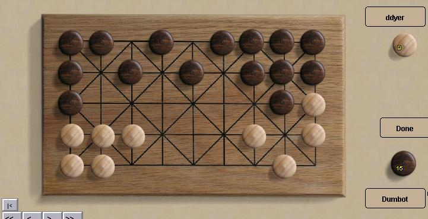

Фанорона
Фанорона это традиционная игра, в современный вариант которой
играют уже на протяжении нескольких столетий. Начало в Фанороне
это быстрая игра с захватами - большинство фигур обычно
захватываются за несколько первых ходов. После первоначальной
резни игра переходит в тонкое позиционное противостояние.
В основном Фанорона популярна на Мадагаскаре, и большинство
описаний игры переведено плохо, поэтому несмотря на то что
официальные правила доступны в другом месте, я для ясности
рекомендую вам прочитать эти правила.
Боты:
Боты играют очень хорошо на начальном этапе захватов, но
уже гораздо хуже когда дело доходит до ловли выживших.
|

|